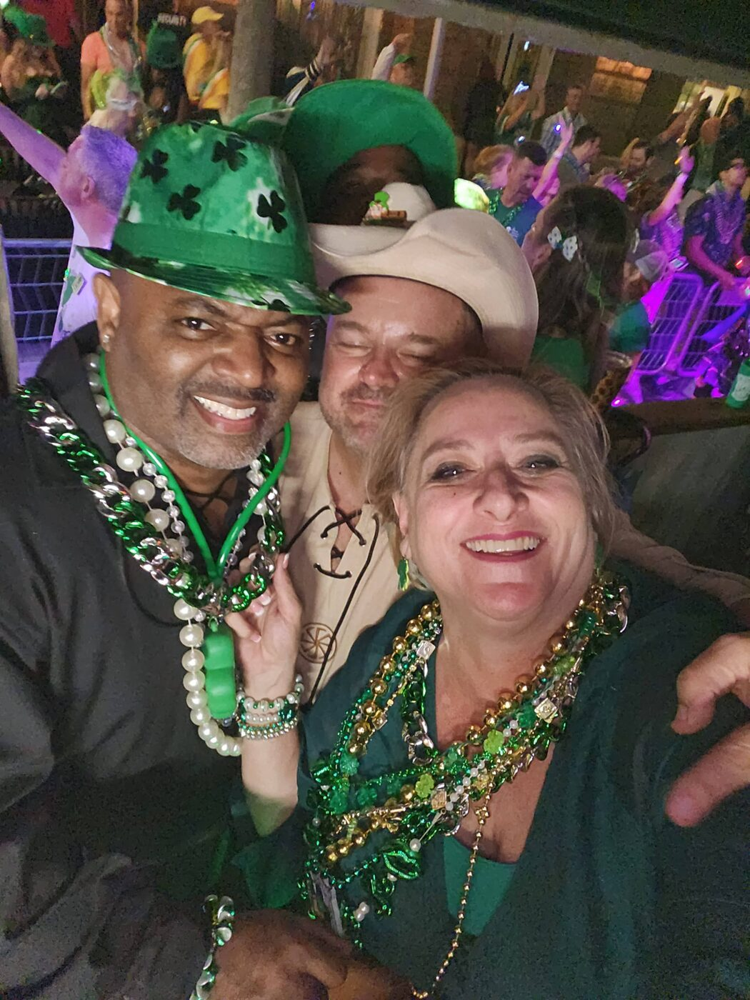

All for Fun, Fun for All — and good for the community
Giving our time and treasure to Tampa Bay's children and families.
For more than twenty years, the Krewe of Shamrock has been a force for good in Tampa Bay. Our members are compassionate, caring people who give their time and their treasure — donating thousands of dollars and countless volunteer hours to charities across the community.
Every full member commits to 12 volunteer hours a year, and most give far more. Service is woven into who we are.

Our 2025–2026 partners in Tampa Bay
Supporting Central Florida children fighting cancer and other serious illnesses, with hardship assistance for their families.
Visit nomoreumbrellas.org →A volunteer-led nonprofit delivering donated furniture and household goods to foster families, refugees, and neighbours starting over.
Visit newlifewarehouse.org →A local Tampa Bay nonprofit the Krewe is proud to support this season, serving families in our community.
Ask us more →Causes close to the Krewe's heart
A longtime prime charity of the Krewe, giving at-risk and troubled youth a safe home and a path forward.
Learn more →A loving home for abused, neglected, and abandoned children — keeping brothers and sisters together in Tampa Bay.
Learn more →World-class pediatric care for children, regardless of a family's ability to pay.
Learn more →Over two decades of Tampa Bay giving
Roll up your sleeves with the Krewe
Krewe members log their service through TrackItForward. Whether it's a warehouse delivery, a charity drive, or a hand at one of our events — every hour makes a difference in Tampa Bay.